Uma jornada através do tempo
Desde os primeiros autômatos até os robôs modernos, a robótica evoluiu de forma impressionante.
Primórdios e Autômatos:
Antiguidade:- As primeiras ideias de máquinas autônomas remontam a civilizações antigas, como a egípcia e a grega, com registros de autômatos rudimentares.
- Leonardo da Vinci, no século XV, projetou um "cavaleiro mecânico", um dos primeiros exemplos de um humanoide mecânico.
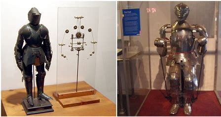 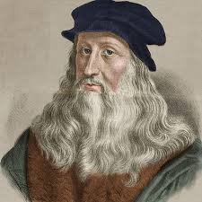
- A Revolução Industrial impulsionou o desenvolvimento de máquinas automatizadas, como os teares de Jacquard, que usavam cartões perfurados para controlar padrões de tecelagem.
- Autômatos mecânicos, como os famosos patos de Jacques de Vaucanson, encantavam o público com suas imitações realistas de animais.
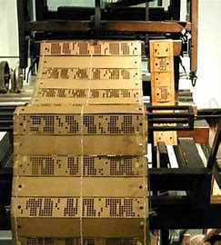 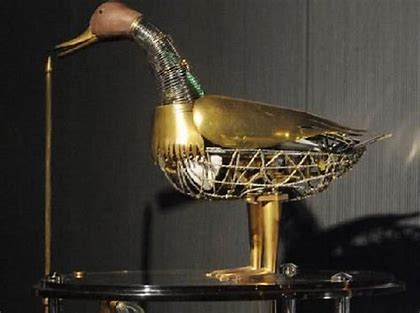 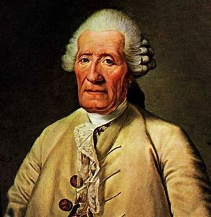
O Nascimento da Robótica Moderna:
Século XX:- O termo "robô" foi popularizado pelo escritor tcheco Karel Čapek em sua peça "R.U.R. (Rossum's Universal Robots)" (1920).
- Isaac Asimov, um renomado autor de ficção científica, formulou as "Três Leis da Robótica" em seus contos, estabelecendo princípios éticos para o comportamento dos robôs.
- A década de 1950 viu o desenvolvimento dos primeiros robôs industriais, como o Unimate, que revolucionou a automação nas fábricas.
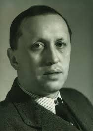
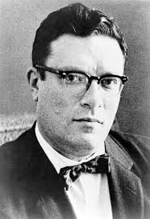
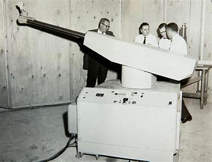
A Era da Inteligência Artificial:
Século XXI:- Avanços em inteligência artificial, aprendizado de máquina e sensores permitiram a criação de robôs mais inteligentes e autônomos.
- Robôs de serviço, como aspiradores de pó e drones, tornaram-se comuns em residências e empresas.
- A robótica médica avançou com a introdução de robôs cirúrgicos e dispositivos de reabilitação.
- Robôs humanoides como o Atlas e Sophia demonstram a evolução da mobilidade e da interação social entre humanos e máquinas.
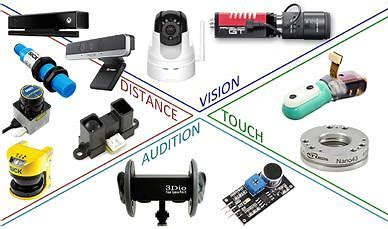
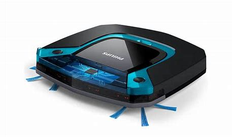
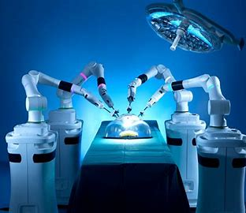
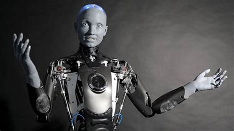
Futuro da Robótica:
- A robótica continua a evoluir rapidamente, com pesquisas em áreas como robótica colaborativa, robótica vestível e inteligência artificial avançada.
- Os robôs têm o potencial de transformar diversos setores, desde a manufatura e a logística até a saúde e a exploração espacial.
- Questões éticas e sociais relacionadas à robótica, como o impacto no emprego e a segurança dos robôs autônomos, estão se tornando cada vez mais importantes.
A história da robótica é uma história de inovação e progresso contínuos, com o potencial de moldar o futuro da humanidade de maneiras profundas.